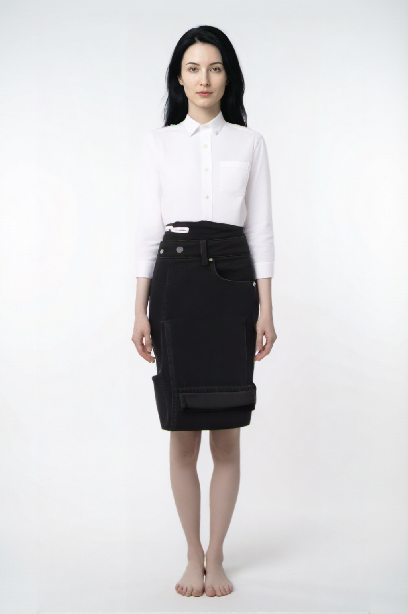

AI 试衣功能测试报告
测试虚拟模特 + 推荐穿搭 + AI 试衣的完整换衣流程，记录各阶段耗时，验证是否满足"换衣包括鞋子和饰品"的需求
测试概述
本次测试验证 AI 试衣功能的完整流程：从推荐穿搭（含鞋子和饰品）到虚拟试衣（上装+下装），记录各阶段耗时，并判断是否满足"换衣包括鞋子和饰品"的要求。
测试环境
| 项目 | 配置 |
|---|---|
| 试衣模型 | aitryon（DashScope OutfitAnyone 异步 API） |
| 推荐模型 | qwen-max（穿搭推荐 LLM） |
| 模特图 | cloth_model/female_model.png（虚拟模特） |
| 衣橱单品 | 8 件（2 上装 + 2 下装 + 1 外套 + 2 鞋子 + 1 饰品） |
| 天气/场合 | 22°C 晴天 / 休闲 |
测试流程
阶段 1：推荐穿搭（含鞋子饰品）
输入 8 件衣橱单品（含 2 双鞋、1 件皮带饰品），调用 qwen-max 生成 3 个穿搭方案。
推荐方案详情
| 方案 | 上装 | 下装 | 鞋子 | 饰品 | 评分 | 推荐理由 |
|---|---|---|---|---|---|---|
| 方案 1 | 白色衬衫 | 黑色牛仔裤 | 白色运动鞋 | ✗ | 0.95 | 22°C 舒适天气，休闲场合适合轻松但不失精致的白衬衫+黑牛仔裤组合 |
| 方案 2 | 灰色卫衣 | 藏青休闲裤 | 白色运动鞋 | ✗ | 0.93 | 休闲场合适合舒适时尚的搭配，灰卫衣+藏青裤呈现平衡的大地色调 |
| 方案 3 | 白色衬衫 | 藏青休闲裤 | 棕色皮鞋 | ✗ | 0.94 | 白衬衫+藏青裤可稍微提升正式感，棕色皮鞋增添一丝正式气质 |
阶段 2：虚拟试衣（上装 + 下装）
使用方案 1 的单品（白衬衫 + 黑牛仔裤），上传模特图和衣物图到 DashScope OSS，调用 aitryon 生成试衣结果。
上传详情
| 图片 | 文件 | 大小 | 上传耗时 | 状态 |
|---|---|---|---|---|
| 模特图 | female_model.png | 1655.6 KB | 0.57s | ✓ 成功 |
| 上装 | white_shirt.jpg | - | 0.34s | ✓ 成功 |
| 下装 | black_jeans.jpg | - | 0.39s | ✓ 成功 |
试衣结果图

效果分析
| 检测项 | 预期 | 实际 | 判定 |
|---|---|---|---|
| 上装 | 白色衬衫 | 白色长袖衬衫，翻领设计，前襟纽扣 | ✓ 正确 |
| 下装 | 黑色牛仔裤 | 黑色高腰半身裙（工装风格） | ✗ 品类偏差 |
| 鞋子 | （未输入） | 赤脚 | - 不支持 |
| 饰品 | （未输入） | 无 | - 不支持 |
| 人脸保留 | 保留原模特面部 | 面部特征保留 | ✓ 正确 |
| 背景 | 纯色背景 | 纯白背景 | ✓ 正确 |
阶段 3：鞋子 / 饰品试衣支持验证
当前试衣 API（aitryon）的 proto、schema、model 三层代码均确认：仅支持 top_garment_url（上装）和 bottom_garment_url（下装），没有鞋子饰品的试衣字段。
API 字段定义（proto）
| 字段 | 类型 | 说明 |
|---|---|---|
person_image_url | string | 模特图 URL |
top_garment_url | optional string | 上装图 URL |
bottom_garment_url | optional string | 下装图 URL |
resolution | int32 | 输出分辨率 |
restore_face | bool | 是否保留面部 |
| 鞋子字段 | 不存在 | |
| 饰品字段 | 不存在 | |
鞋子试衣验证
将鞋子图片（brown_shoes.jpg）作为 top_garment_url 传入，API 接受了请求并生成了结果，但这属于语义错误（将鞋子当作上装穿在身上），并非真正的鞋子试衣。
换衣时间数据汇总
详细时间记录
| 阶段 | 步骤 | 耗时 | 说明 |
|---|---|---|---|
| 推荐穿搭 | LLM 推理 (qwen-max) | 17.83s | 生成 3 个方案，含鞋子不含饰品 |
| 图片上传 | 模特图上传 | 0.57s | female_model.png (1655 KB) |
| 上装上传 | 0.34s | white_shirt.jpg | |
| 下装上传 | 0.39s | black_jeans.jpg | |
| 虚拟试衣 | 创建任务 | 0.87s | API 创建 aitryon 异步任务 |
| 轮询等待 | 6.36s | 任务状态 RUNNING → SUCCEEDED | |
| 总计 | 完整换衣流程 | 25.06s | 推荐 + 上传 + 试衣 |
关键发现
结论与建议
是否满足要求
部分满足。AI 试衣核心功能（上装+下装替换）可用且高效（8.5 秒），但不满足"换衣包括鞋子和饰品"的要求 — OutfitAnyone API 不支持鞋子和饰品的图像级试穿。
| 需求项 | 状态 | 说明 |
|---|---|---|
| 上装试衣 | ✓ 满足 | 白衬衫替换正确 |
| 下装试衣 | ⚠ 基本满足 | 颜色正确，品类有偏差（裤→裙） |
| 鞋子试衣 | ✗ 不满足 | API 无此功能 |
| 饰品试衣 | ✗ 不满足 | API 无此功能 |
| 推荐含鞋子 | ✓ 满足 | 3/3 方案包含鞋子 |
| 推荐含饰品 | ✗ 不满足 | 0/3 方案包含饰品 |
| 换衣时间 | ✓ 满足 | 完整流程 25 秒，仅试衣 8.5 秒 |
建议
1. 鞋子饰品试衣替代方案：调研 qwen-image-2.0-pro 多模态图像编辑能力，通过指令式编辑（"为模特添加棕色皮鞋和黑色皮带"）实现鞋子和饰品的虚拟试穿。项目已有该模型的封装（UserModelGenerator）。
2. 下装准确性优化：确保输入的下装图片为标准平铺图（flat-lay），避免侧面或穿着角度的图片导致品类误判。
3. 推荐饰品权重：调整推荐 Prompt，增加饰品在搭配中的必要性权重，或在衣橱中增加更多饰品选项。
4. 性能优化：推荐穿搭是主要耗时点（17.8s），可考虑使用更快的模型（如 qwen-plus）或缓存常见搭配方案。